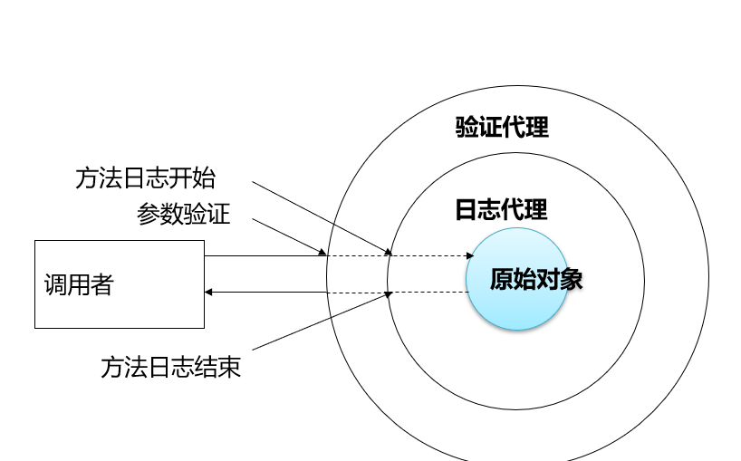
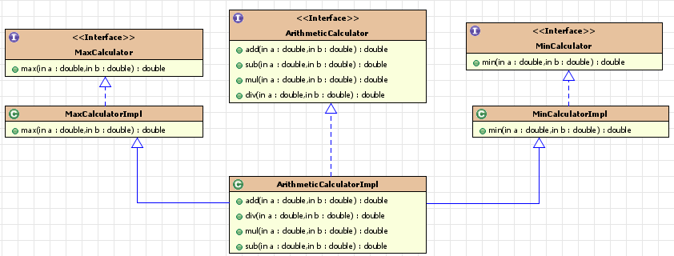
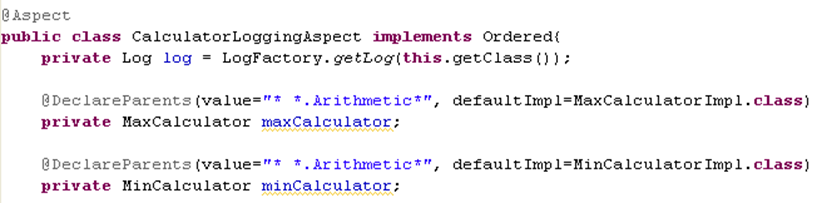
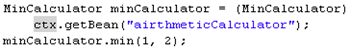

今天来介绍一下AOP。AOP，中文常被翻译为“面向切面编程”，其作为OOP的扩展，其思想除了在Spring中得到了应用，也是不错的设计方法。通常情况下，一个软件系统，除了正常的业务逻辑代码，往往还有一些功能性的代码，比如：记录日志、数据校验等等。最原始的办法就是直接在你的业务逻辑代码中编写这些功能性代码，但是，这样除了当时开发的时候比较方便以外；代码的阅读性、可维护性都会大大降低。而且，当你需要频繁使用一个功能的时候（比如记录日志），你还需要重复编写。而使用AOP的好处，简单来说就是，它能把这种重复性的功能代码抽离出来，在需要的时候，通过动态代理技术，在不修改源代码的情况下提供增强性功能。
优势：
@Getter
@Setter
@NoArgsConstructor
@AllArgsConstructor
@ToString
@EqualsAndHashCode
public class Account implements Serializable {
private Integer id;
private String name;
private Float money;
}
public interface AccountDao {
/**
* 查询所有
* @return
*/
List<Account> findAllAccount();
/**
* 查询一个
* @return
*/
Account findAccountById(Integer accountId);
/**
* 保存
* @param account
*/
void saveAccount(Account account);
/**
* 更新
* @param account
*/
void updateAccount(Account account);
/**
* 删除
* @param acccountId
*/
void deleteAccount(Integer acccountId);
/**
* 根据名称查询账户
* @param accountName
* @return 如果有唯一的一个结果就返回，如果没有结果就返回null
* 如果结果集超过一个就抛异常
*/
Account findAccountByName(String accountName);
}
public class AccountServiceImpl_OLD implements AccountService {
private AccountDao accountDao;
private TransactionManager txManager;
public void setTxManager(TransactionManager txManager) {
this.txManager = txManager;
}
public void setAccountDao(AccountDao accountDao) {
this.accountDao = accountDao;
}
@Override
public List<Account> findAllAccount() {
try {
//1.开启事务
txManager.beginTransaction();
//2.执行操作
List<Account> accounts = accountDao.findAllAccount();
//3.提交事务
txManager.commit();
//4.返回结果
return accounts;
}catch (Exception e){
//5.回滚操作
txManager.rollback();
throw new RuntimeException(e);
}finally {
//6.释放连接
txManager.release();
}
}
@Override
public Account findAccountById(Integer accountId) {
try {
//1.开启事务
txManager.beginTransaction();
//2.执行操作
Account account = accountDao.findAccountById(accountId);
//3.提交事务
txManager.commit();
//4.返回结果
return account;
}catch (Exception e){
//5.回滚操作
txManager.rollback();
throw new RuntimeException(e);
}finally {
//6.释放连接
txManager.release();
}
}
@Override
public void saveAccount(Account account) {
try {
//1.开启事务
txManager.beginTransaction();
//2.执行操作
accountDao.saveAccount(account);
//3.提交事务
txManager.commit();
}catch (Exception e){
//4.回滚操作
txManager.rollback();
}finally {
//5.释放连接
txManager.release();
}
}
@Override
public void updateAccount(Account account) {
try {
//1.开启事务
txManager.beginTransaction();
//2.执行操作
accountDao.updateAccount(account);
//3.提交事务
txManager.commit();
}catch (Exception e){
//4.回滚操作
txManager.rollback();
}finally {
//5.释放连接
txManager.release();
}
}
@Override
public void deleteAccount(Integer acccountId) {
try {
//1.开启事务
txManager.beginTransaction();
//2.执行操作
accountDao.deleteAccount(acccountId);
//3.提交事务
txManager.commit();
}catch (Exception e){
//4.回滚操作
txManager.rollback();
}finally {
//5.释放连接
txManager.release();
}
}
@Override
public void transfer(String sourceName, String targetName, Float money) {
try {
//1.开启事务
txManager.beginTransaction();
//2.执行操作
//2.1根据名称查询转出账户
Account source = accountDao.findAccountByName(sourceName);
//2.2根据名称查询转入账户
Account target = accountDao.findAccountByName(targetName);
//2.3转出账户减钱
source.setMoney(source.getMoney()-money);
//2.4转入账户加钱
target.setMoney(target.getMoney()+money);
//2.5更新转出账户
accountDao.updateAccount(source);
int i=1/0;
//2.6更新转入账户
accountDao.updateAccount(target);
//3.提交事务
txManager.commit();
}catch (Exception e){
//4.回滚操作
txManager.rollback();
e.printStackTrace();
}finally {
//5.释放连接
txManager.release();
}
}在这里，我们看见了很恶心的代码：大量重复性的记录日志的代码，而且，当你更改的时候，你发现并不方便。后续我们会对这个代码进行改写。
AOP通过动态代理的来实现。
在这里先简单介绍一下动态代理：使用一个代理将对象包装起来, 然后用该代理对象取代原始对象.。任何对原始对象的调用都要通过代理. 代理对象决定是否以及何时将方法调用转到原始对象上。其调用过程如下图所示：

装饰者模式就是静态代理的一种体现。
基于子类的动态代理
提供者：第三方的 CGLib，如果报 asmxxxx 异常，需要导入 asm.jar。
要求：被代理类不能用 final 修饰的类（最终类）。
下面结合示例来解释一下这两种动态代理的实现方式：
笔者最近更换了一台新的电脑，就以买电脑来举个例子吧。现在大家买电脑，已经很少去实体店了，多半是通过电商渠道。不管是什么，都是从中间商来买，这一行为，在无形中就体现了代理模式的思想。
电脑生产商最开始的时候，除了生产和组装电脑，同时还可以将电脑出售给消费者或者经销商(代理商)，而他对顾客来说，需要完成两种服务：销售商品和售后服务。当行业发展到一定阶段，电脑生产商不断增多，人们就会制定一些行业规范来让大家共同遵守（也就是抽象出来的接口）。而且，电脑生产商为了节约成本，不再提供直接和消费者销售的服务，我们消费者也因此只能从代理商那里购买新的电脑。这便是典型的代理模式。
public interface IProducer {
public void saleProduct(float money);
public void afterService(float money);
}
public class Producer implements IProducer {
@Override
public void saleProduct(float money) {
System.out.println("销售产品，并拿到钱：" + money);
}
@Override
public void afterService(float money) {
System.out.println("提供售后服务，并拿到钱：" + money);
}
}
//消费者
public class Client {
public static void main(String[] args) {
final Producer producer = new Producer();
/**
* 如何创建代理对象：
* 使用Proxy类中的newProxyInstance方法
* 创建代理对象的要求：
* 被代理类最少实现一个接口，如果没有则不能使用
* newProxyInstance方法的参数：
* ClassLoader：类加载器
* 它是用于加载代理对象字节码的。和被代理对象使用相同的类加载器。固定写法。
* Class[]：字节码数组
* 它是用于让代理对象和被代理对象有相同方法。固定写法。
* InvocationHandler：用于提供增强的代码
* 它是让我们写如何代理。我们一般都是些一个该接口的实现类，通常情况下都是匿名内部类，但不是必须的。
* 此接口的实现类都是谁用谁写。
*/
IProducer proxyProducer = (IProducer) Proxy.newProxyInstance(producer.getClass().getClassLoader(),
producer.getClass().getInterfaces(), new InvocationHandler() {
/**
* 作用：执行被代理对象的任何接口方法都会经过该方法
* 方法参数的含义
* @param proxy 代理对象的引用
* @param method 当前执行的方法
* @param args 当前执行方法所需的参数
* @return 和被代理对象方法有相同的返回值
* @throws Throwable
*/
@Override
public Object invoke(Object proxy, Method method, Object[] args) throws Throwable {
//提供增强的代码
Object returnValue = null;
//1.获取方法执行的参数
Float money = (Float)args[0];
//2.判断当前方法是不是销售,如果是的话，打八折
if("saleProduct".equals(method.getName())) {
returnValue = method.invoke(producer, money*0.8f);
}
return returnValue;
}
});
proxyProducer.saleProduct(10000f);
}
}
使用jdk提供的Proxy来创建代理对象的时候，要求别代理对象至少要实现一个接口，代理类需要实现同样的接口并由同一类加载器加载。如果没有这样，就不能使用这种方式了。其他具体内容，请参考官方文档。
其实，说AOP是OOP的延伸，还是很容易证明的：jdk提供动态代理的方式是实现接口，而cglib的实现方式就是利用了OOP的继承。原理大同小异，主要区别就是不用实现接口而是改用继承，也因此具备继承的限制：被代理的类不能是被final修饰。
public class Client {
public static void main(String[] args) {
final Producer producer = new Producer();
/**
* create方法的参数：
* Class：字节码
* 它是用于指定被代理对象的字节码。
*
* Callback：用于提供增强的代码
* 它是让我们写如何代理。我们一般都是些一个该接口的实现类，通常情况下都是匿名内部类，但不是必须的。
* 此接口的实现类都是谁用谁写。
* 我们一般写的都是该接口的子接口实现类：MethodInterceptor
*/
Producer proxyProducer = (Producer) Enhancer.create(producer.getClass(), new MethodInterceptor() {
@Override
public Object intercept(Object o, Method method, Object[] objects,
MethodProxy methodProxy) throws Throwable {
Object result = null;
Float price = (Float) objects[0];
if ("saleProduct".equals(method.getName())) {
result = method.invoke(o, price * 0.8f);
}
return result;
}
});
proxyProducer.saleProduct(10000f);
}
}
ublic class Client {
public static void main(String[] args) {
final Producer producer = new Producer();
/**
* create方法的参数：
* Class：字节码
* 它是用于指定被代理对象的字节码。
*
* Callback：用于提供增强的代码
* 它是让我们写如何代理。我们一般都是些一个该接口的实现类，通常情况下都是匿名内部类，但不是必须的。
* 此接口的实现类都是谁用谁写。
* 我们一般写的都是该接口的子接口实现类：MethodInterceptor
*/
Producer proxyProducer = (Producer) Enhancer.create(producer.getClass(), new MethodInterceptor() {
@Override
public Object intercept(Object o, Method method, Object[] objects,
MethodProxy methodProxy) throws Throwable {
Object result = null;
Float price = (Float) objects[0];
if ("saleProduct".equals(method.getName())) {
result = method.invoke(o, price * 0.8f);
}
return result;
}
});
proxyProducer.saleProduct(10000f);
}
}以上所述的两种生成代理对象的方法，在Spring中都会应用：默认优先使用jdk自带的方式，当发现别代理类没有实现接口时改用cglib方式。
Aspect(切面):
是切入点和通知（引介）的结合。
这次我们打算做一个简单一点的功能：实现一个能够进行加减乘除运算的计算器，并进行相应的日志记录
过程主要是以下几步：
1.开发业务逻辑代码
2.开发切面代码
3.配置ioc,将计算器和切面配置到Spring容器中
4.切面配置，开启AOP
对于配置的方式，主要是还是两种方式：
public interface ArithmeticCalculator {
int add(int i, int j);
int sub(int i, int j);
int mul(int i, int j);
int div(int i, int j);
}
@Component("arithmeticCalculator")
public class ArithmeticCalculatorImpl implements ArithmeticCalculator {
@Override
public int add(int i, int j) {
int result = i + j;
return result;
}
@Override
public int sub(int i, int j) {
int result = i - j;
return result;
}
@Override
public int mul(int i, int j) {
int result = i * j;
return result;
}
@Override
public int div(int i, int j) {
int result = i / j;
return result;
}
}
package com.spring.demo.springaop;
import org.aspectj.lang.JoinPoint;
import org.aspectj.lang.annotation.*;
import org.springframework.stereotype.Component;
import java.util.Arrays;
/**
* 可以使用 @Order 注解指定切面的优先级, 值越小优先级越高
*/
@Aspect
@Component
public class LoggingAspect {
@Pointcut("execution(public int com.spring.demo.springaop.ArithmeticCalculator.*(..))")
public void declareJoinPoint() {}
@Before("declareJoinPoint()")
public void beforeMehtod(JoinPoint joinPoint) {
String methodName = joinPoint.getSignature().getName();
Object[] args = joinPoint.getArgs();
System.out.println("the " + methodName + " begins with " + Arrays.asList(args));
}
@AfterReturning(value = "declareJoinPoint()", returning = "result")
public void afterMethod(JoinPoint joinPoint, Object result) {
String methodName = joinPoint.getSignature().getName();
System.out.println("the " + methodName + " ends successfully with result is " + result);
}
@AfterThrowing(value = "declareJoinPoint()", throwing = "e")
public void afterException(JoinPoint joinPoint, Exception e) {
String methodName = joinPoint.getSignature().getName();
System.out.println("the " + methodName + "occurs a Exception by" + e.getMessage());
}
/**
* 环绕通知需要携带 ProceedingJoinPoint 类型的参数.
* 环绕通知类似于动态代理的全过程: ProceedingJoinPoint 类型的参数可以决定是否执行目标方法.
* 且环绕通知必须有返回值, 返回值即为目标方法的返回值
*/
/*
@Around("execution(public int com.spring.demo.springaop.ArithmeticCalculator.*(..))")
public Object aroundMethod(ProceedingJoinPoint pjd){
Object result = null;
String methodName = pjd.getSignature().getName();
try {
//前置通知
System.out.println("The method " + methodName + " begins with " + Arrays.asList(pjd.getArgs()));
//执行目标方法
result = pjd.proceed();
//返回通知
System.out.println("The method " + methodName + " ends with " + result);
} catch (Throwable e) {
//异常通知
System.out.println("The method " + methodName + " occurs exception:" + e);
throw new RuntimeException(e);
}
//后置通知
System.out.println("The method " + methodName + " ends");
return result;
}
*/
}
@Order(1)
@Aspect
@Component
public class VlidationAspect {
@Before("com.spring.demo.springaop.LoggingAspect.declareJoinPoint()")
public void validateArgs(JoinPoint joinPoint){
System.out.println("-->validate:" + Arrays.asList(joinPoint.getArgs()));
}
}
@EnableAspectJAutoProxy
@Configuration
@ComponentScan
public class MainConcig {
}
public class Main {
public static void main(String[] args) {
AnnotationConfigApplicationContext context = new AnnotationConfigApplicationContext("com.spring.demo" +
".springaop");
ArithmeticCalculator arithmeticCalculator = (ArithmeticCalculator) context.getBean("arithmeticCalculator");
int add = arithmeticCalculator.add(100, 200);
}
}
JavaBean还是这些，只是将各个注解删除即可，而bean的配置和aop功能的开启，由配置文件来声明。要引入aop命名空间。
<!-- 配置 bean -->
<bean id="arithmeticCalculator"
class="com.spring.demo.springaop.xml.ArithmeticCalculatorImpl"></bean>
<!-- 配置切面的 bean. -->
<bean id="loggingAspect"
class="com.spring.demo.springaop.xml.LoggingAspect"></bean>
<bean id="vlidationAspect"
class="com.spring.demo.springaop.xml.VlidationAspect"></bean>
<!-- 配置 AOP -->
<aop:config>
<!-- 配置切点表达式 -->
<aop:pointcut expression="execution(* com.spring.demo.springaop.ArithmeticCalculator.*(int, int))"
id="pointcut"/>
<!-- 配置切面及通知 -->
<aop:aspect ref="loggingAspect" order="2">
<aop:before method="beforeMethod" pointcut-ref="pointcut"/>
<aop:after method="afterMethod" pointcut-ref="pointcut"/>
<aop:after-throwing method="afterThrowing" pointcut-ref="pointcut" throwing="e"/>
<aop:after-returning method="afterReturning" pointcut-ref="pointcut" returning="result"/>
<!--
<aop:around method="aroundMethod" pointcut-ref="pointcut"/>
-->
</aop:aspect>
<aop:aspect ref="vlidationAspect" order="1">
<aop:before method="validateArgs" pointcut-ref="pointcut"/>
</aop:aspect>
</aop:config>execution:匹配方法的执行(常用)
execution(表达式)
表达式语法： execution([修饰符] 返回值类型 包名.类名.方法名(参数))
写法说明：
全匹配方式：
public void com.itheima.service.impl.AccountServiceImpl.saveAccount(com.itheima.domain.Account)
访问修饰符可以省略
void com.itheima.service.impl.AccountServiceImpl.saveAccount(com.itheima.domain.Account)
返回值可以使用*号，表示任意返回值
补充说明： 引入通知
引入通知是一种特殊的通知类型. 它通过为接口提供实现类, 允许对象动态地实现接口, 就像对象已经在运行时扩展了实现类一样。

引入通知可以使用两个实现类 MaxCalculatorImpl 和 MinCalculatorImpl, 让 ArithmeticCalculatorImpl 动态地实现 MaxCalculator 和 MinCalculator 接口. 而这与从 MaxCalculatorImpl 和 MinCalculatorImpl 中实现多继承的效果相同. 但却不需要修改 ArithmeticCalculatorImpl 的源代码。
引入通知也必须在切面中声明。
代码演示

